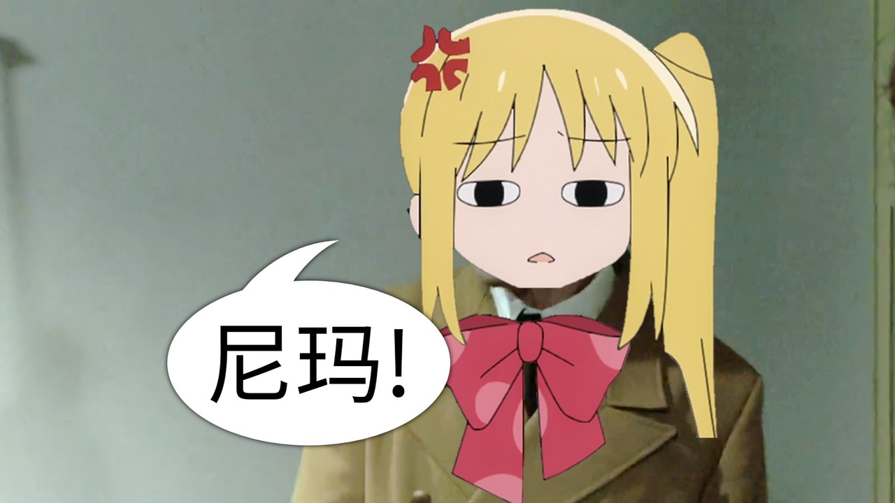
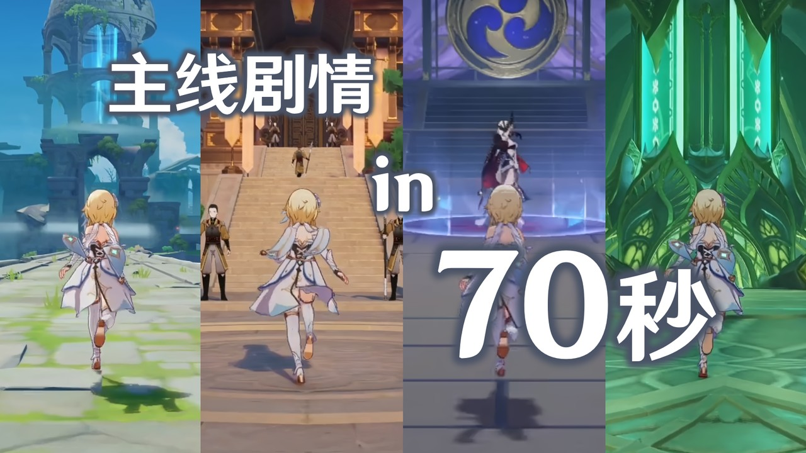
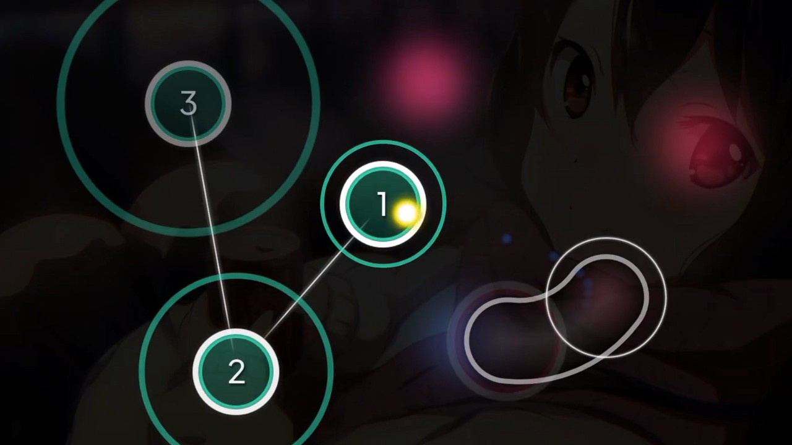
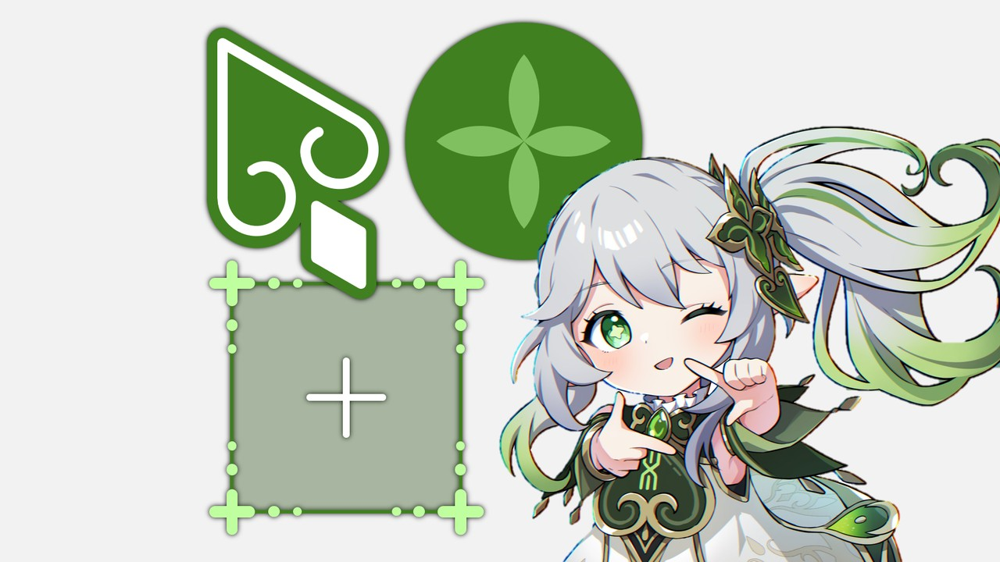
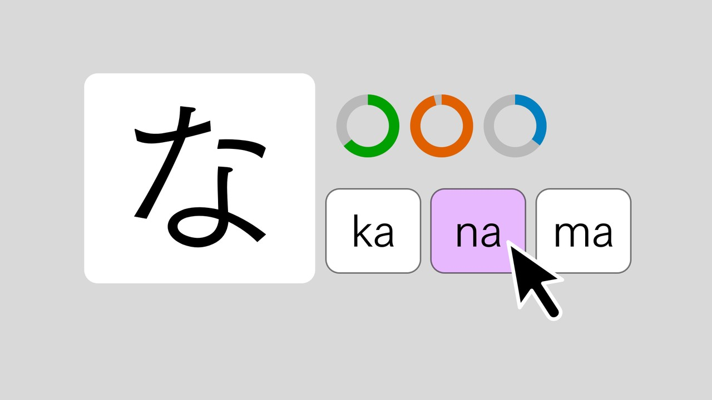
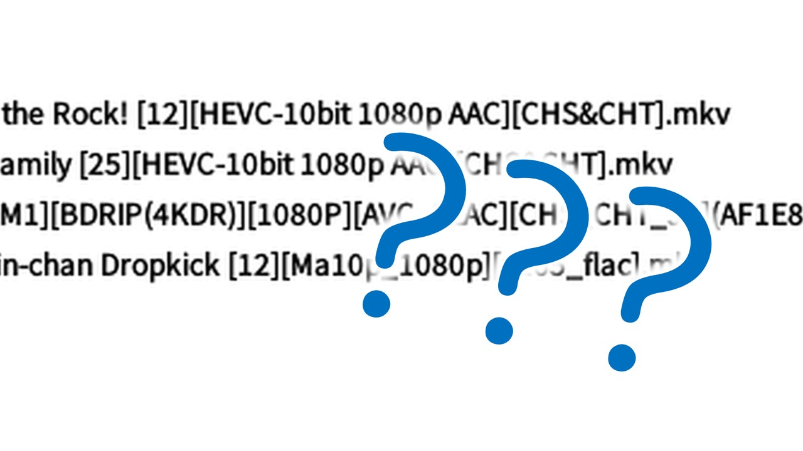
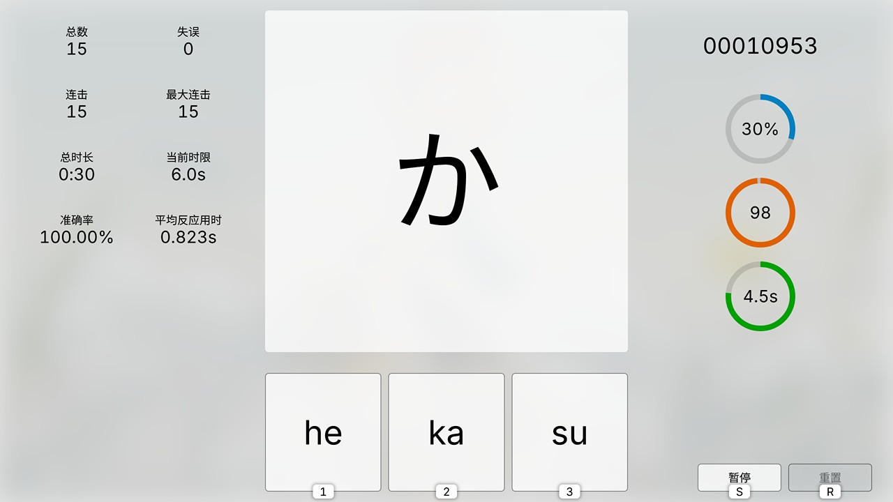
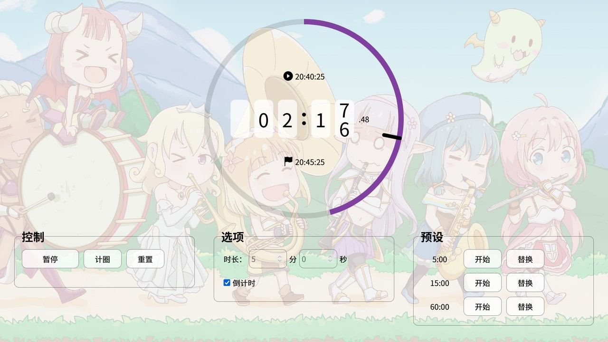
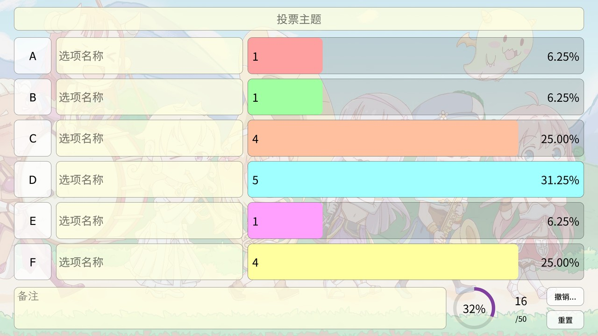

主页
推荐作品
-

虹夏：决不向波喜多投降！
2023/04/30 7千浏览
「大屁股裂了尼玛死！你妹的喜多郁代…」
-

原神主线剧情70秒跑酷式回顾
2023/03/21 12.6万浏览
原本是长达8分钟的 JOJO 梗曲结合游戏画面的剪辑，后来因为太长没人看就剪取了其中一段，意外地挺有人气。
-

Sam Toki 的 osu! 个人战绩回放 (系列)
2022/11/05 1.3万浏览
押す！让鼠标起舞的快感！
-

纳西妲概念鼠标指针 Nahida Concept Mouse Cursors for Windows
2022/10/24 41.5万浏览
目前为止我最广为人知的作品，当时貌似蹭到了热度。纳西妲的小肉腿我 prpr（警笛声
-

孤独摇滚呆毛鼠标指针
2023/02/17 2.8万浏览
波门！
-

芙宁娜概念鼠标指针
2023/08/14 7.9万浏览
「还不快点把我 (boku) 带进你的电脑？」
-

日文假名记忆训练游戏「假名征服者」第二代网页版
2023/11/14 600浏览
日文假名记忆训练游戏，结合了音游的元素。本游戏针对日语初学者，也欢迎 N1 大佬来挑战高难度。
-

字幕组动画资源惯用文件名含义科普
2020/12/13 2.6万浏览
为初入动画圈的萌新们厘清资源文件名中的「1080P」「HEVC」「CHS」之类的字眼都是什么意思。
-
PC 视频播放：从 PotPlayer 转战 mpv & Anime4K 的个人经验
2023/10/22 1.3万浏览
PC 果然才是影音发烧友的终极平台，无论 Windows 还是 Linux 都萌大奶～
玩具仓库
-

假名征服者
2023/11/05 v1.09 (2024/04/05)
日文假名记忆训练游戏，结合了音游的元素。本游戏针对日语初学者，也欢迎 N1 大佬来挑战高难度。
-

Timer+Lottery
2023/09/27 v2.00 (2024/04/04)
计时与摇号工具。计时器支持倒计时与正计时，以及秒表计圈功能，精确至0.01秒；摇号器支持骰子与扑克牌模式。
-

VoteHelper
2023/09/16 v2.00 (2024/04/04)
投票计票辅助工具与看板，实际上就是好几个计数器。纸张与黑板的实用替代品。